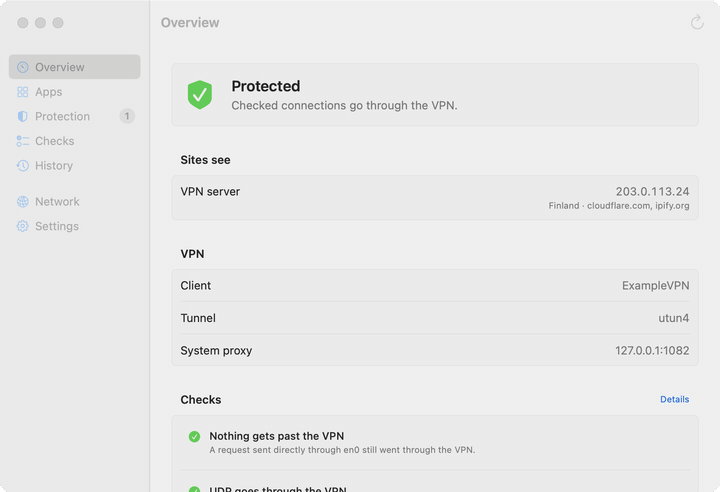
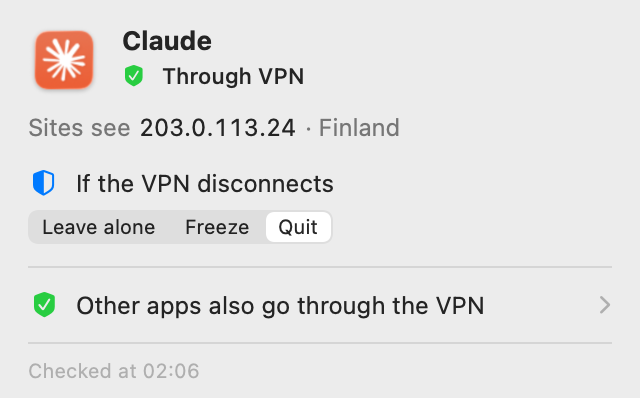

Your VPN dropped for a second, and your apps were already online with your real address
VPN Lens watches the VPN and the apps you pick. The moment the VPN connection drops, it freezes or quits those apps. When the VPN is back, frozen apps resume on their own.

Protection on disconnect
Pick the apps that must never go online without the VPN, and whether to freeze or quit them. The choice is remembered per app.
See how every app connects
Through the VPN, around it, or partly around it, and what address sites see. For the active app in the menu, for all of them in the window.
Leak checks
Tunnel bypass, WebRTC, IPv6 and DNS. Only what a measurement confirms is marked red.
Protection fires on the system's network-change event, and the freeze itself takes microseconds. But it isn't a network filter: something may slip out before the event arrives. For added protection, also turn on your VPN client's own kill switch.
Right in the menu bar

The shield in the menu bar shows the overall result. Click it for a summary of the app you're working in: whether it goes through the VPN, what address sites see, and what to do with it if the VPN disconnects. Notifications arrive when the VPN disconnects while apps keep working.
Install
- Install with Homebrew using the commands above (
brew trustis needed in Homebrew 7 and later), or download the archive from Releases and move "VPN Lens" to Applications. - The app isn't notarized by Apple, so macOS blocks it on first launch. Open System Settings > Privacy & Security and click "Open Anyway" next to VPN Lens. You only need to do this once.
- After that VPN Lens lives in the menu bar. Open at login, language and a keyboard shortcut are in Settings.
Privacy
No telemetry. Nothing about your apps or connections leaves your Mac. To learn your external address and check the network, VPN Lens sends requests to test services such as cloudflare.com and ipify.org. One switch turns off all online checks. Exactly where, when and what each service can see, and what's stored on your Mac, is in the README.
Open source
A Rust core, a SwiftUI interface, MIT license. How the checks work, and why a connection over Wi-Fi doesn't by itself mean traffic bypasses the VPN, is in the architecture notes.